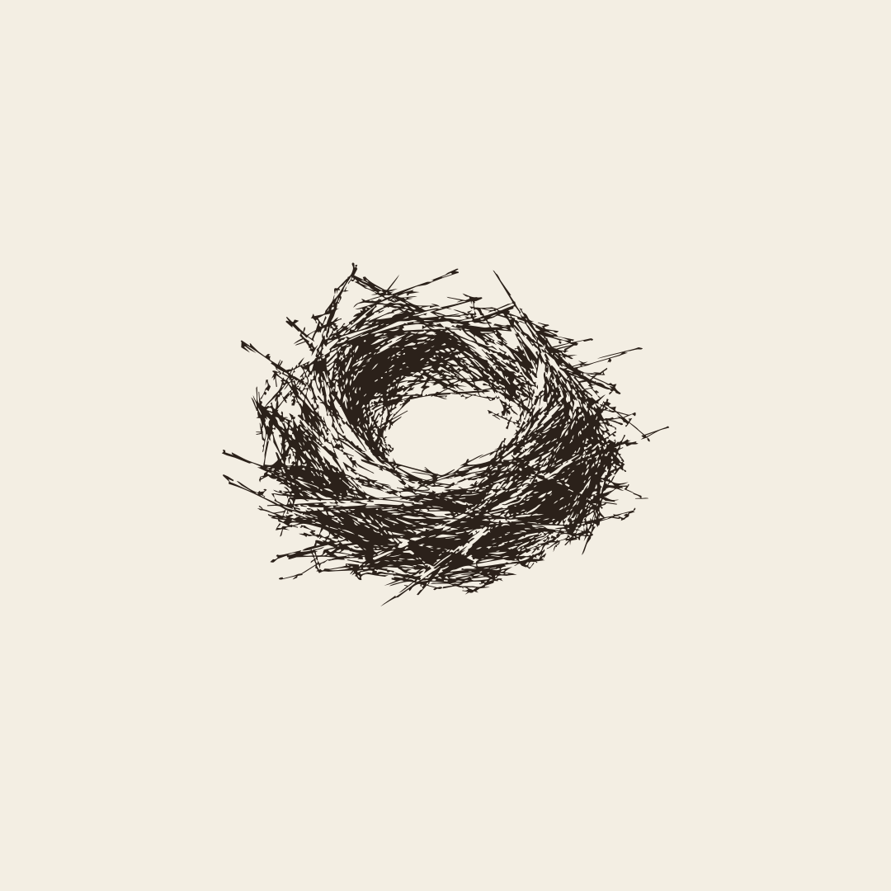
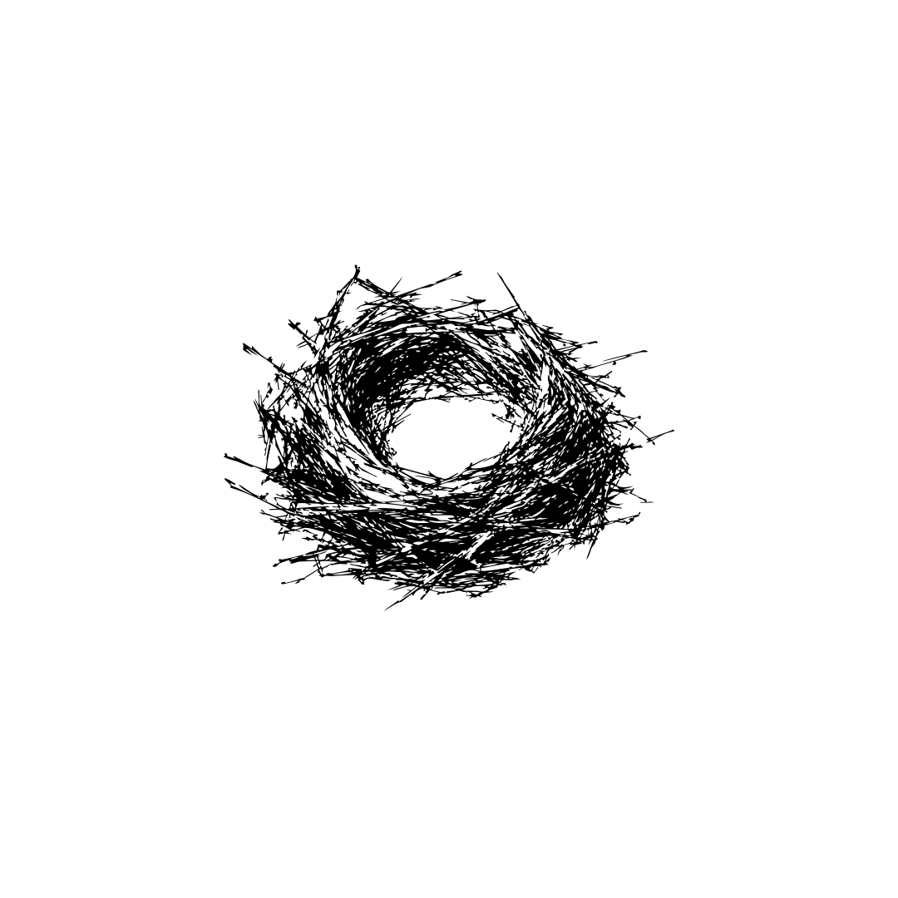
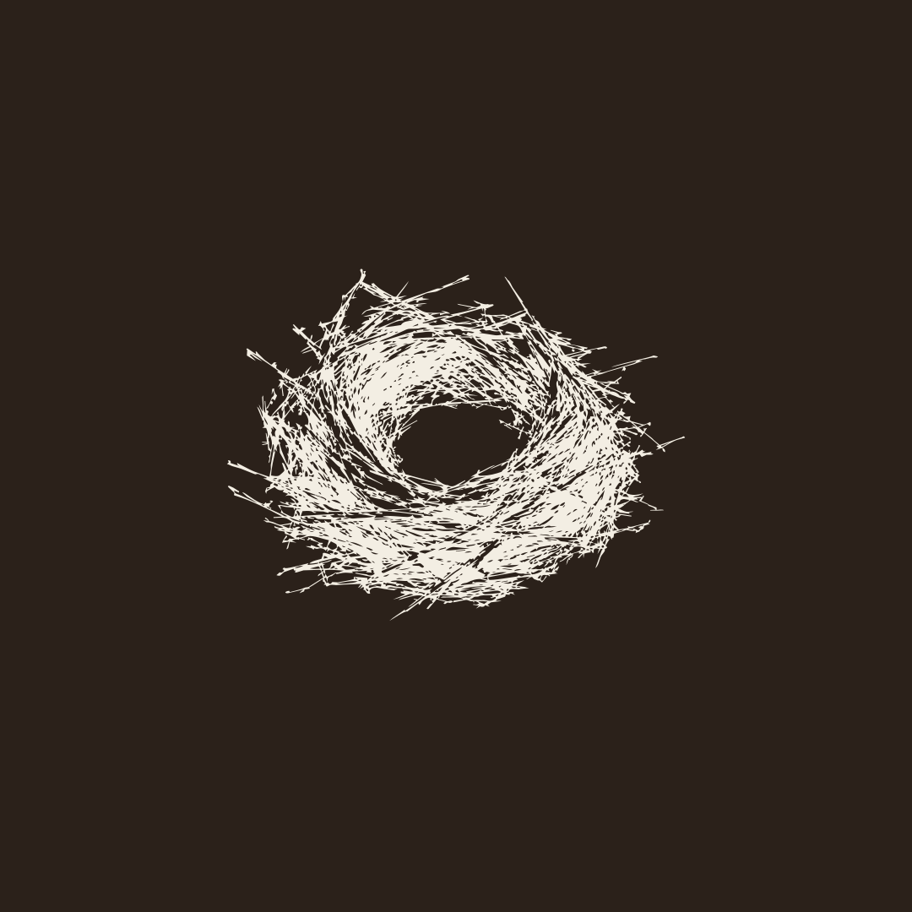
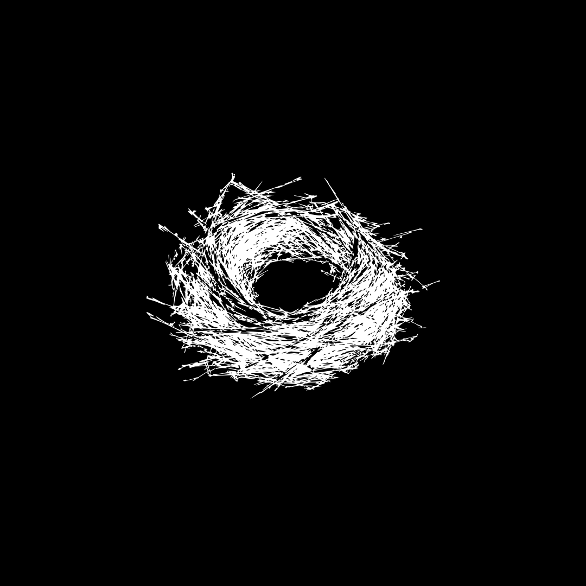
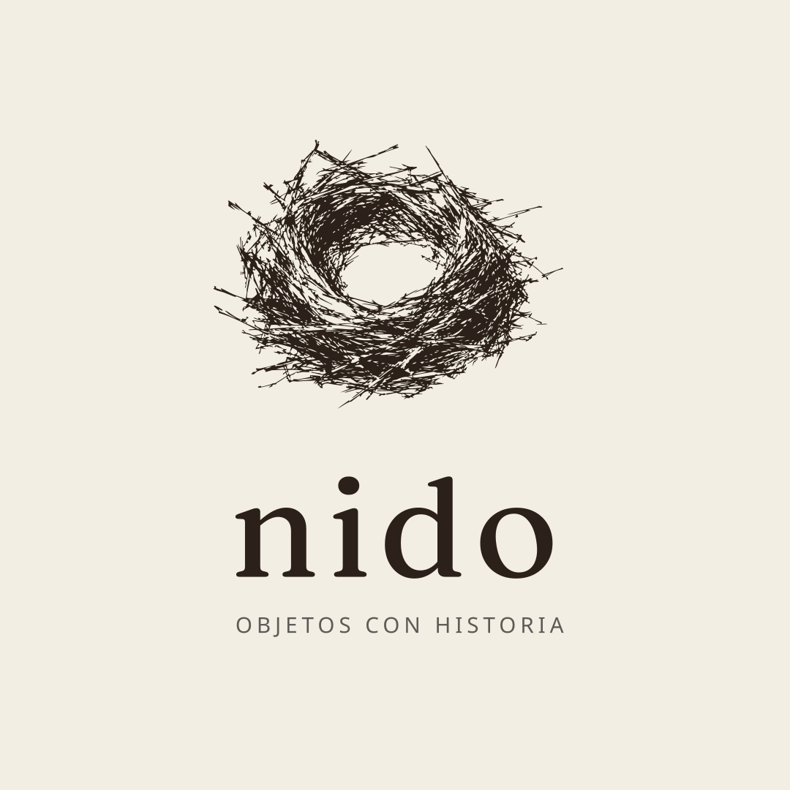
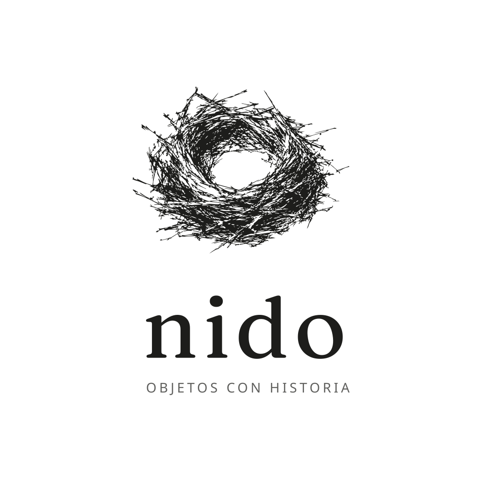
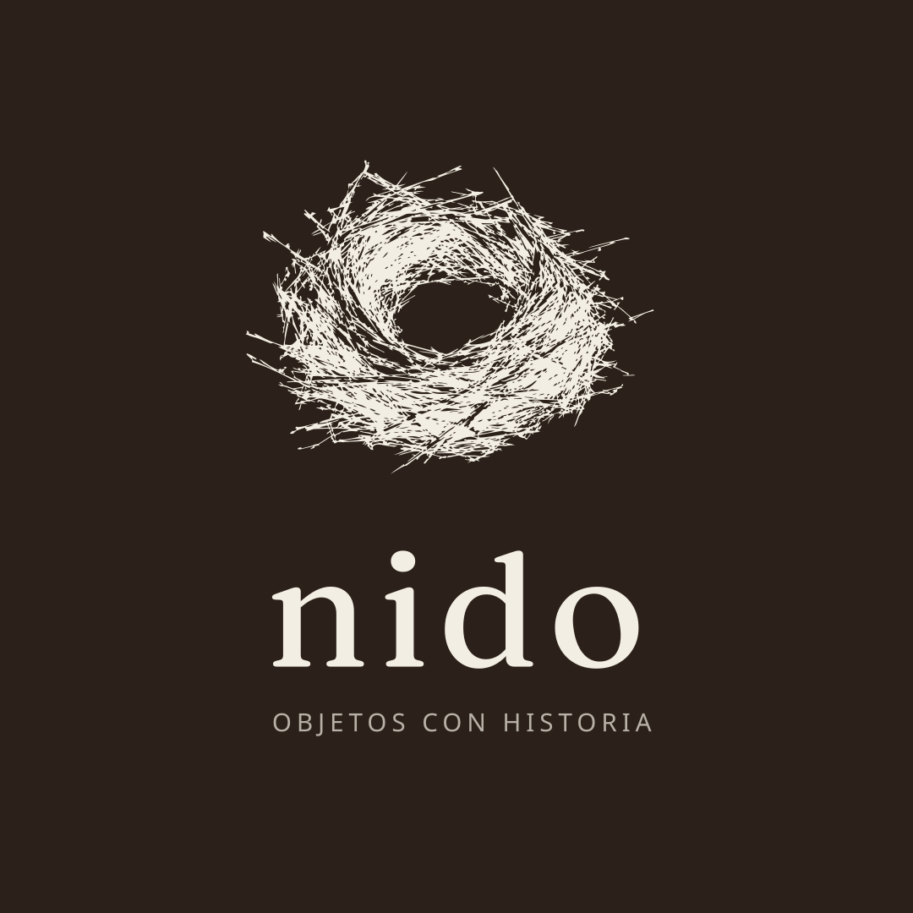
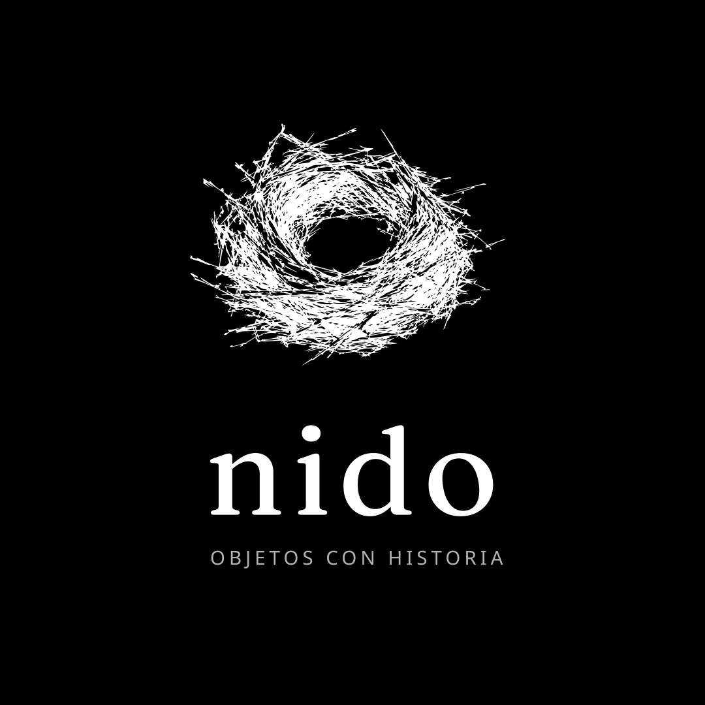

NIDO
Diseño para el hogar. Muebles, iluminación, objetos y textiles — piezas que transforman una casa en un lugar donde quedarse.Home design. Furniture, lighting, objects and textiles — pieces that turn a house into a place to stay.

- ParaFor
- Prueba técnica · Diseñador Gráfico · DendraTechnical test · Graphic Designer · Dendra
- AñoYear
- 2026
- Qué hiceWhat I did
- Identidad visual completa: ícono, lockup, paleta, tipografía, fotografía y piezas para InstagramComplete visual identity: icon, lockup, palette, typography, photography and Instagram pieces
- HerramientasTools
- GPT, Gemini, Photoshop, Illustrator, Lightroom, Claude
- PúblicoAudience
- Pocitos, Montevideo · 25–40 añosPocitos, Montevideo · ages 25–40
- TonoTone
- Cálido · Sereno · Con criterio · Nórdico cálidoWarm · Serene · Discerning · Warm Nordic
nido no vende muebles, acompaña el criterio de armar un lugar propio.nido doesn't sell furniture: it supports the judgment behind making a place your own.
El nombre remite al nido literal: un objeto antiguo, armado a mano, ramita por ramita, con lo que hay cerca. No responde a un plano sino a un instinto que se ajusta con el tiempo y con quien lo habita. nido vive en esa misma tensión — la del living real — donde el ruido de mil opciones se decanta, pieza por pieza, hasta el criterio de lo esencial.The name refers to the literal nest: an ancient object, built by hand, twig by twig, with whatever is close by. It doesn't follow a plan but an instinct that adjusts over time and to whoever lives in it. nido lives in that same tension — the real living room — where the noise of a thousand options settles, piece by piece, into a sense of what is essential.
Sistema de marcaBrand system








Paleta y tipografíaPalette and typography
- LinoLinen#F3EEE4
- Espresso#2B211A
- TerracotaTerracotta#C17A54
- SalviaSage#8A9A7E
- ArenaSand#D9CBB8
- TítulosDisplay
- Fraunces
- TextoBody
- Karla
FotografíaPhotography
Cuatro escenas, un mismo ecosistema tonal.Four scenes, one tonal ecosystem.